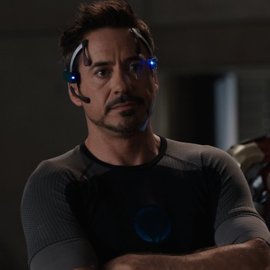

Building A Better Future
What is TED?
TED is a non-profit organization devoted to Ideas Worth Spreading. Started as a four-day conference in California 30 years ago, TED has grown to support its mission with multiple initiatives. The two annual TED Conferences invite the world's leading thinkers and doers to speak for 18 minutes or less. Many of these talks are then made available, free, at TED.com. TED speakers have included Bill Gates, Jane Goodall, Elizabeth Gilbert, Sir Richard Branson, Nandan Nilekani, Philippe Starck, Ngozi Okonjo-Iweala, Sal Khan and Daniel Kahneman.
What is TEDx?
In the spirit of catering to regional needs, TED has created a program called TEDx. TEDx is a program of local, self-organized events that bring people together to share a TED-like experience. Our event is called TEDxNITW, where x = independently organized TED event. At our event, TEDTalks video and live speakers will combine to spark deep discussion and connection in a small group. The TED Conference provides general guidance for the TEDx program, but individual TEDx events, including ours, are self-organized.
Meet Our Speakers
Tony Stark
Know More Stark is an eccentric self-described genius, billionaire, playboy and philanthropist and the former head of Stark Industries.
Hermione Granger
Know More
Hermione played a significant role in many other battles of the Second Wizarding War, as well. In 1997 she fought in the Battle of the Seven Potters, alongside the Order of the Phoenix.
Sherlock Holmes
Know More
Holmes is known for his proficiency with observation, forensic science, and logical reasoning that borders on the fantastic, which he employs when investigating cases for a wide variety of clients, including Scotland Yard.
Richard Hendricks
Know MoreRichard Hendricks is a software designer, creator of the Pied Piper app and algorithm,